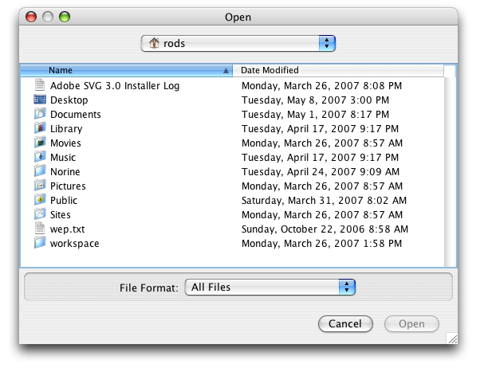
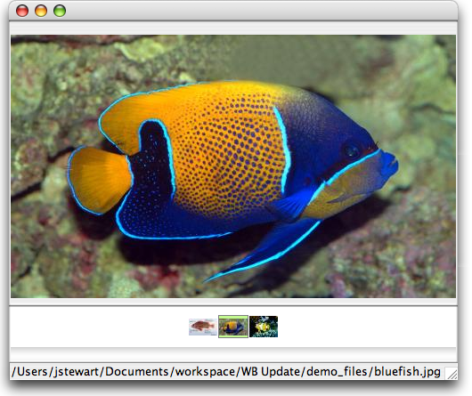

The Image Window displays linked images and provides additional functionality for working with the images.
It is important to understand that the WorkBench does not relocate or store image files within Data Sets. The WorkBench creates a link to the image location. The WorkBench does create a smaller version, or thumbnail, of the image, but it is not a replacement for the original image. The original image should never be deleted or moved. The WorkBench displays the thumbnail image in the Image Window by default but the original image can be displayed by using the Image Menu.
Note: Images may not exceed 16 MB.
The image window is toggled on and off by clicking the  (Image Window) button in the work space Item Bar. When an image window is toggled 'on' an 'Image' column appears in the Data Set, which includes the names of the files linked to the Data Set records.
(Image Window) button in the work space Item Bar. When an image window is toggled 'on' an 'Image' column appears in the Data Set, which includes the names of the files linked to the Data Set records.
The Image Window will open on the side of the WorkBench window that allows the most space on the screen. The Image Window may overlap the WorkBench window if the screen does not allow enough space for both to exist side-by-side. The Image Window default setting is 'always on top'. This can be changed in the Image Menu.
Link one or more images to a single record using the Image Window.
First select a record, then click the  (Image Window) button to activate the Image Window.
(Image Window) button to activate the Image Window.

Image Window
Click on 'Link New Image(s)'.
A file dialog will appear:

Image File Dialog
Choose an image file (or files) to link and click 'Open'.
The first image will display in the main image window. Multiple linked images will show as thumbnails in the 'tray' at the bottom of the image window.

Linked Images
Click on a thumbnail to change the image on display in the main image window.
The filename of the linked image will be displayed in the status bar at the bottom of the Image Window.
To link a new image to a new record simply click on the new record. The 'Link New Image(s)' button will display in the Image Window.
Note: Do not select the Image Window button to link another image, it will close the Image Window as well as the Image column.
More image controls are available in the Image Window menus, located at the top of the Image Window.
The menu items available in the Image Window menus are defined in the following table:
| Menu | Choices | Result |
File |
Import Images | Imports images into the Data Set, creating a new, empty row for each image imported. |
| Close | Closes the Image Window. | |
View |
Reduced Size | Displays the Image thumbnail. |
| Original Size | Displays the original image in full resolution. | |
| Keep Window on Top | Keeps the Image Window displayed on top of the WorkBench. | |
Image |
Add Image Links | Opens a dialog to choose new images to link to the record. |
| Delete Image Link | Unlinks the image from the record. | |
| Replace Image | Opens a dialog to choose a new image to link to the record, replacing the currently selected image. | |
Help |
Image Window | Opens the Image Window section of the WorkBench Help. |